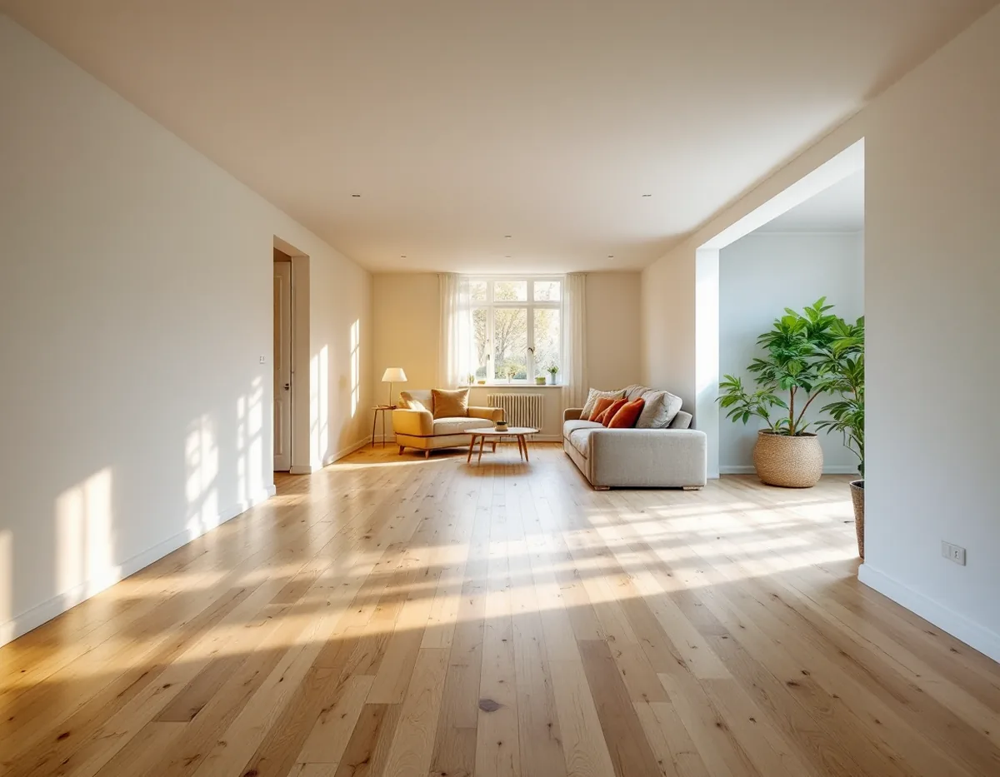
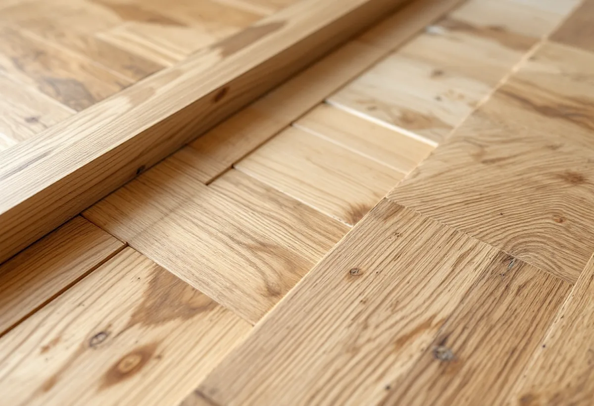

Platsbesök
Vi ser på golvet på båda sidor om väggen och hur det är lagt.

Geal Entreprenad AB slipar trägolv och parkett i villor och radhus i Täby och lagar in nya brädor där en vägg har stått, med gratis platsbesök och ROT-avdrag direkt på fakturan.
Beskriv jobbet kort.
Något blev fel. Kontrollera uppgifterna eller ring 08 12 410 276.
Vi tittar på jobbet på plats innan du får offert.
Du ser vad som ingår och vad det kostar.
Vi drar av ROT direkt och sköter ansökan.
Geal Entreprenad AB, Bromma. Org.nr 559303-7566.

Ibland är det en glipa, ibland ett parti med ett annat golv, och ibland har rummen haft olika ytbehandling. Geal Entreprenad AB slipar och lagar trägolv i villor, radhus och kedjehus i Täby, och vi ser till att det nya rummet får ett golv som hänger ihop.
Kommunens riktlinjer Kulturmiljöer i Täby, antagna 2024, beskriver hur många bostäder i radhus och grupphusområden byggdes under 1970-talet i Täby kyrkby och Byle. Erikslund är ett enhetligt grupphusområde från första halvan av 1970-talet med över 300 bostäder, och parhusen där har två våningar och flacka tak. I Näsbypark kom grupphusområdet Norskogen redan 1957–59, med 197 bostäder i villor, parhus och radhus.
Kommunens råd för grupphusområdena handlar om det som syns utifrån: det tidstypiska uttrycket, takformer och takmaterial, färgsättning och fönsterformat. När en vägg inne i huset ska bort är det i stället golvet som berörs.
Boverket skriver att en vägg som inte är bärande, eller en vägg där man redan förberett för att kunna öppna upp när huset byggdes, kan rivas utan anmälan. Påverkas byggnadens bärande delar väsentligt krävs däremot en anmälan till byggnadsnämnden och ett startbesked innan arbetet börjar. För att ta reda på vilka delar som är bärande kan det vara lämpligt att ta hjälp av en konstruktör.
För golvet lönar det sig att bestämma i förväg hur skarven ska lösas, så att väggen inte rivs på ett sätt som skadar brädorna i onödan. Själva väggarbetet beskrivs under snickare i Täby. Ska du i stället bygga en ny vägg som går att ta bort igen ger Svenska Byggnadsvårdsföreningen rådet att försöka minimera infästningarna i parketten.
I föreningens frågespalt beskriver en läsare ett vardagsrum som tidigare varit två rum. Golvet var olika i de två halvorna: i den ena låg brädorna tätt, i den andra var de slitna och glesa med fler kvisthål, och där väggen hade stått fanns en glipa på upp till två centimeter. Föreningen förklarar att golvet i det ena rummet kan ha varit ett undergolv för en linoleummatta, medan det andra var själva golvet.
I ett annat svar, om två rum med lackade och slitna furugolv som skulle bli ett stort kök, frågar föreningen om inte en slipning eller helst en sickling kunde vara en kompromiss. Hantverksmässigt lagade skador kan enligt föreningen ge en extra dimension. Att hyvla om eller vända på ett befintligt golv är fullt möjligt men kräver en del handlag.
Där väggen stod behöver golvet ofta kompletteras. Om ett torp där en tredjedel av golvet skulle läggas nytt skriver föreningen att det går att få tag på samma dimensioner hos mindre sågverk. Ska nya brädor passa in i ett skurgolv kan de enligt ett annat svar få ligga utomhus och gråna en tid innan de läggs in. Att skynda på med järnvitriol är svårt, eftersom det ger en dystrare gråton än naturligt åldrat trä och styrkan är svår att träffa.
I en stavparkett avslöjar sorteringen om det är en lekman som har lagt den, skriver föreningen: stavarna sorteras i ljusa och mörka och läggs i fallande ordning i varje rad, med intilliggande rader i omvänd ordning. När skarven är lagad slipar vi hela det nya rummet i samma arbetsgång, så att gamla och nya delar får samma yta. Gäller det i stället klinker, golvvärme eller ett helt nytt golv finns mer under golvläggare i Täby.
Vi ser på golvet på båda sidor om väggen och hur det är lagt.
Lagning av skarven, slipning och ytbehandling redovisas var för sig.
Rivningen görs först, och golvet skyddas där det ska ligga kvar.
Glipan fylls med brädor eller stavar som passar det gamla golvet.
Hela rummet slipas, så att ytan blir enhetlig.
En behandling läggs på hela golvet, gammalt som nytt.
Skatteverket ger rotavdrag för att riva väggar och bygga om planlösningen i ett hus, om bostaden är äldre än fem år och större delen av den ursprungliga stommen behålls. Slipning och byte av golv är också rotarbete i ett småhus som du äger och använder som bostad.
Avdraget får vara högst 30 procent av arbetskostnaden, högst 50 000 kr per person och år och högst 75 000 kr tillsammans med rutavdrag. Bygglovshandlingar och arkitekt ger inget avdrag, och det gör inte heller material. Geal drar avdraget direkt på fakturan.
Hur lång skarven är, om golvet behöver kompletteras med nya brädor eller stavar, rummets yta och vilken ytbehandling du väljer. Efter ett gratis platsbesök får du ett skriftligt kostnadsförslag.
Parkett, trägolv, klinker och slipning.
Golvläggning i Stockholm →Takbyte, takbesiktning och plåtarbeten.
Takläggare i Täby →Näsbypark, Viggbyholm och Gribbylund.
Takrenovering i Täby →Detaljplan, Q-märkning och VA-inkoppling.
Attefallshus i Täby →Kulör per kvarter och provytor.
Fasadmålning i Täby →Villastäder och grupphus i Täby.
Fönsterbyte i Täby →Gårdarnas fönster, kulör och spröjs.
Fönsterrenovering i Täby →Radhuslängor, villor och nya gästhus.
Badrumsrenovering i Täby →Tillbyggnad, gästhus och renovering.
Byggföretag i Täby →Tegelvillor, kedjehus och grupphus i Täby.
Fasadrenovering i Täby →Villor, radhus och kedjehus från 1970- och 80-talen.
Golvläggare i Täby →Grupphus, radhus och villor vid banan.
Köksrenovering i Täby →Trävillor, puts och kedjehus i Täby.
Målare i Täby →Stationsvillor, funkis och grupphus i Täby.
Plåtslagare i Täby →Verandor, fönster och carport.
Snickare i Täby →Betongpannor, kedjehus och tegelvillor.
Takbyte i Täby →Ny tapet mot lister och foder.
Tapetsering i Täby →Byle, kyrkbyn och detaljplanen.
Tillbyggnad i Täby →Ett hus som går att bo kvar i.
Totalrenovering i Täby →Eller ring 08 12 410 276, mån–fre 08–17.
Beskriv jobbet kort.
Något blev fel. Kontrollera uppgifterna eller ring 08 12 410 276.